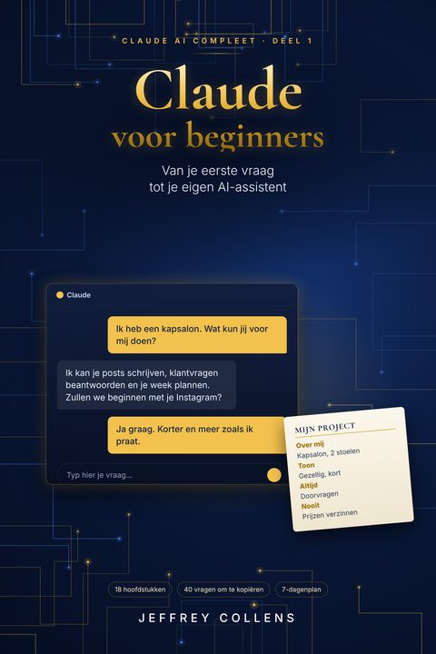
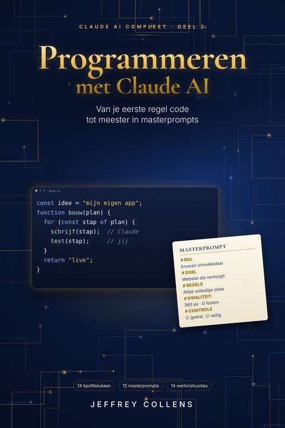
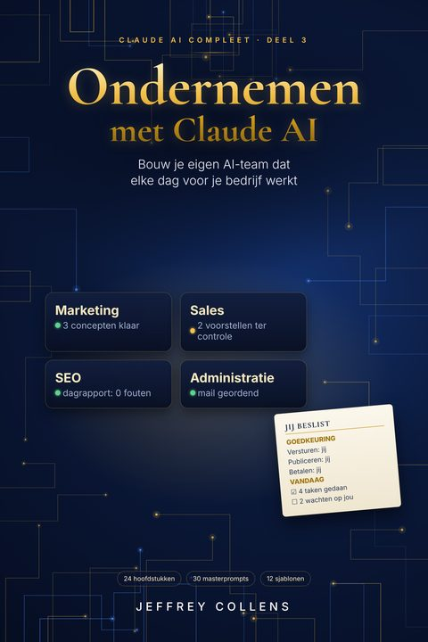

Boeken: de reeks Claude AI Compleet
Praktische boeken in gewoon Nederlands, geschreven vanuit de dagelijkse praktijk van Collens Group. Elk deel is los verkrijgbaar en direct te downloaden.
De boeken

Deel 1
Claude voor beginners
Van je eerste vraag tot je eigen AI-assistent
Voor iedereen die AI wil gebruiken zonder technische kennis. In gewoon Nederlands leer je Claude zo inwerken dat het je werk, je bedrijf en je toon kent, en elke dag tijd voor je bespaart.
€29,99 · PDF en EPUB

Deel 2
Programmeren met Claude AI
Van je eerste regel code tot meester in masterprompts
Leer zelf websites en apps bouwen met AI als partner, en schrijf de instructies waarmee AI voorspelbaar en controleerbaar voor je werkt. Geen ervaring nodig.
€39,99 · PDF · verschijnt binnenkort

Deel 3
Ondernemen met Claude AI
Bouw je eigen AI-team dat elke dag voor je bedrijf werkt
Het praktijkboek voor ondernemers: hoe je marketing, klanten, vindbaarheid en administratie laat voorbereiden door AI, terwijl jij goedkeurt en beslist.
In voorbereiding
Waarom deze reeks?
Alles wat in deze boeken staat, gebruiken we zelf: voor onze eigen website, onze apps en het dagelijkse werk van ons bedrijf. Ook wat misging staat erin, met de regels die het voortaan voorkomen. De boeken bouwen op elkaar voort: deel 1 leert je AI gebruiken, deel 2 leert je ermee bouwen en deel 3 leert je er je bedrijf mee runnen.
Hoe koop je een boek?
Je koopt de boeken via onze webshop op Gumroad, een bekend platform voor digitale producten. Na het afrekenen download je het boek meteen. In de webshop vind je ook printbare producten, zoals planners en spellen voor het hele gezin.
Veelgestelde vragen
Moet ik de boeken op volgorde lezen?
Nee, elk boek is los te lezen. Ben je nieuw met AI, begin dan bij deel 1. Wil je zelf websites of apps bouwen, dan is deel 2 de volgende stap.
In welk formaat krijg ik de boeken?
Als digitaal bestand: deel 1 als PDF en EPUB, deel 2 als PDF. Je downloadt ze direct na aankoop via Gumroad.
Zijn de boeken van Anthropic?
Nee. Het zijn onafhankelijke gidsen van Jeffrey Collens, niet verbonden aan Anthropic, het bedrijf achter Claude.
Zie ook: Claude voor beginners · Over ons · AI en automatisering